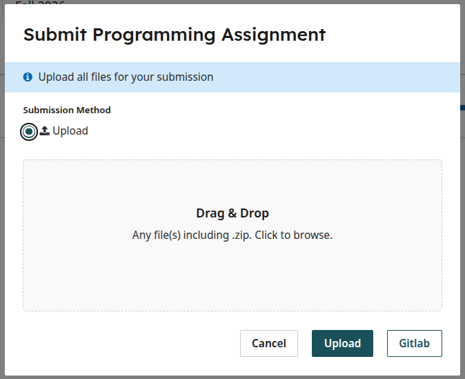
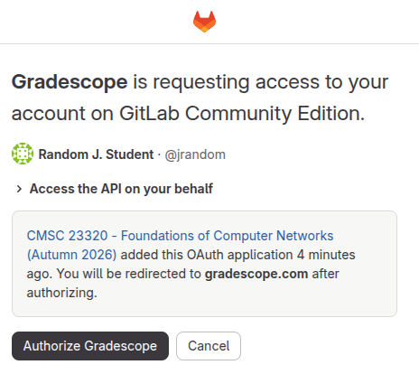
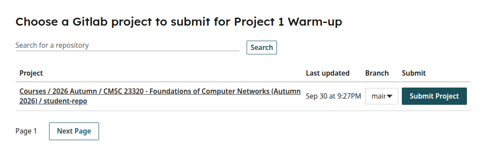

Projects - Submitting from GitLab#
This page explains how to submit your GitLab repository directly into Gradescope.
Once you are ready to submit, you will be shown this form on Gradescope:

Please ignore the “Upload” button. Instead, click on the Gitlab button.
NOTE: If you’re accessing Gradescope from inside Canvas, you may be shown some sort of “page cannot be accessed” message. If so, please try completing these steps by logging directly into https://www.gradescope.com/
If this is the first time you submit from Gradescope, you will be asked to confirm that you want to authorize Gradescope to access your Gitlab account:

Click on “Authorize Gradescope”
Afterwards (and in subsequent submissions), you will be shown a list of the repositories you have access to:

Make sure you select the correct branch (typically main), and click on “Submit Project”